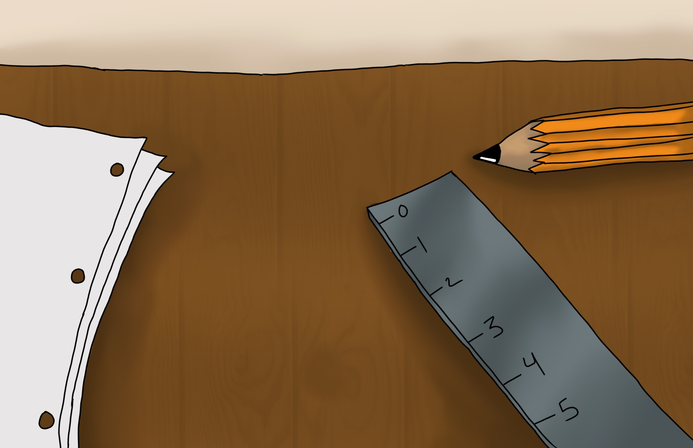
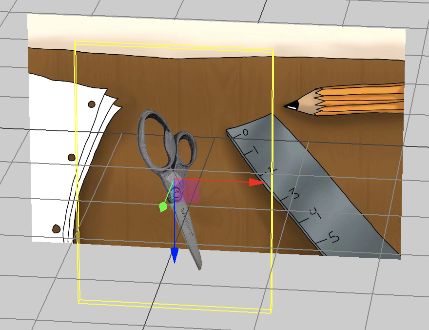

Scissors - Scissors In Place
Personal Place
A place where one would typically find a household pair of scissors would be on a desk next to other desk supplies. I created a simple desk with sheets of paper for cutting, a ruler for measurement, and a pencil. The pencil would fit in between the sheets of paper and the ruler in Artivive. Scissors are one out of the many supplies frequently used by a diverse range of people whether it be used for crafting, or simple paper cutting.

Back